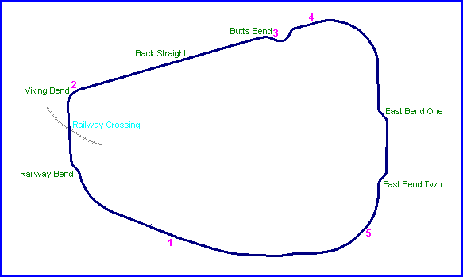
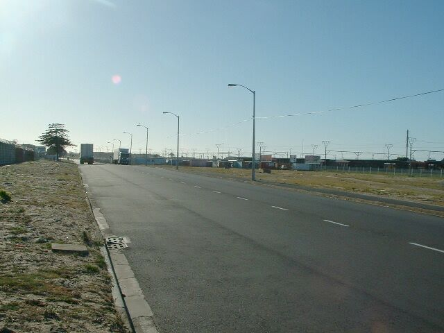
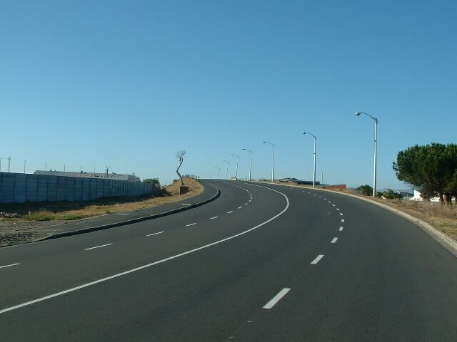
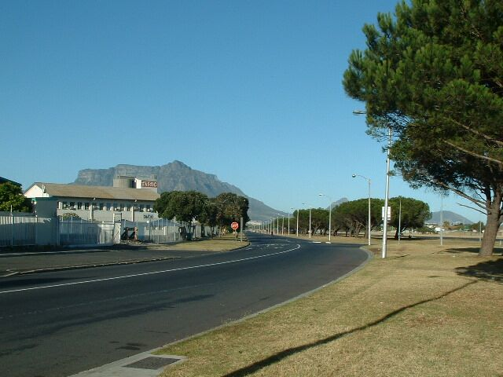
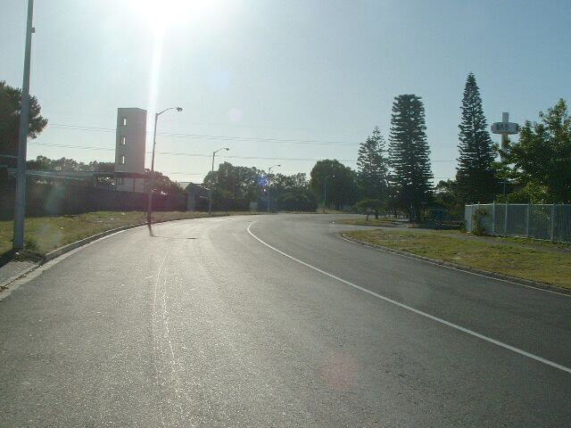
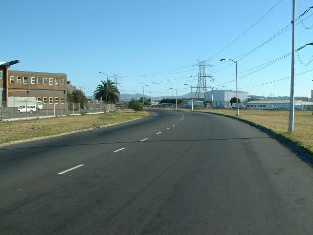

Gunner's Circle, South Africa
Type: Street Circuit
Length: 3.250 Miles / 5.230 km
Used: 2 January 1951 - 1 January 1958
Photographs Taken: January, 2004
Situated in the Epping Industrial Area 10 km East of the Cape Town City Center. This circuit was built in the latter part of 1950 and covered a distance of 3 miles and 440 yards. The first race took place on 2 January 1951 and races were regularly held until the final meeting on 1 January 1958. The promoters were unable to obtain further permission to use this circuit due to increasing industrial development in the area at that particular time. Today this area is home to hundreds of prominent factories, workshops and other industrial related businesses. The areas to the north and west are residential areas, while a highway flanks the eastern border. A railway line is situated to the south.
Numbers on the map indicate where the pictures were taken. See below to view the photographs.

Return to racingcircuits.net's Photo Archive Main Index

1) Start/Finish line with Main straight leading
towards this point.

2) Bridge over ex-Railway crossing, with corner
turning right into Back Straight

3) Rear view from Butts Bend into the Back Straight. (Table Mountain and Cape Town in the
background).

4) Entering corner out of Butts Bend and heading towards East
Bend One

5) Rear view of section out of East Bend Two and
cornering towards Main Straight section
Text & Graphics ©Marius Matthee. Reproduced here with kind permission.